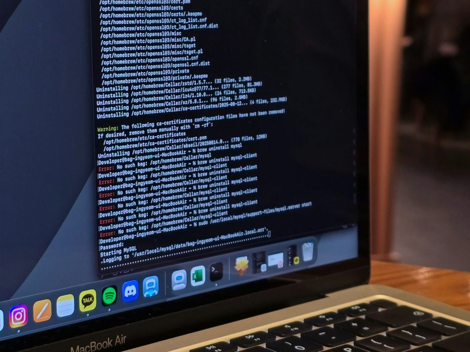
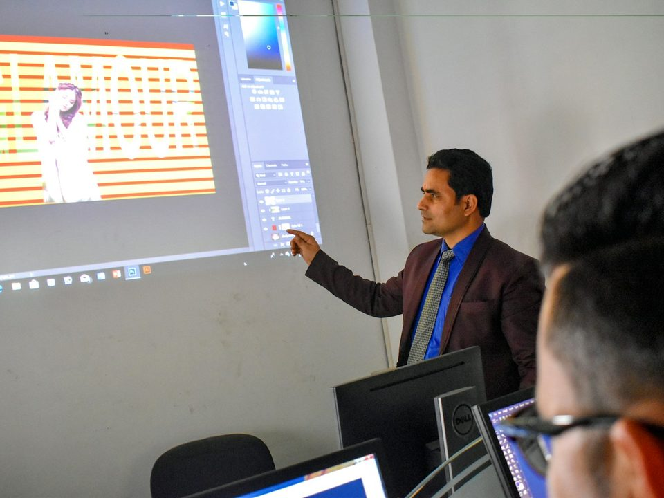
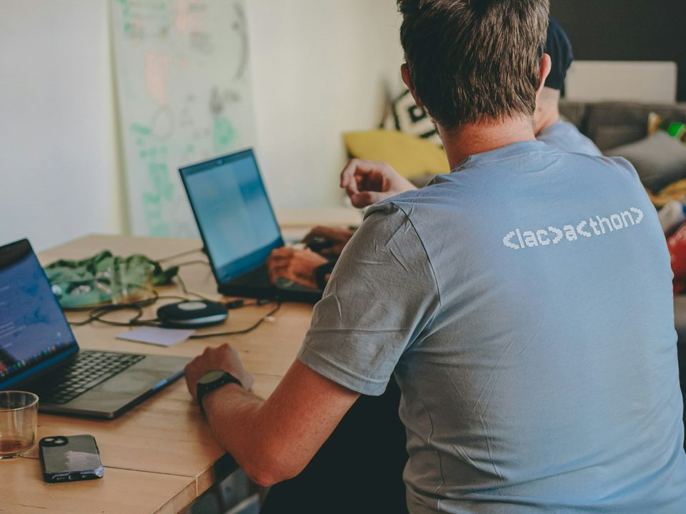

御社が最優秀賞に選んだチーム・個人とは、ハッカソン後にビジネスや協業に進むことを前提としていただきます。基準に届く案がなければ、最優秀賞は選ばなくても構いません。
企業・団体・自治体のお題を募集中 現場の困りごとの解決も、新しい商品・サービスの試作も。企画書ではなく、動くものができます。
御社のお題を、参加者がAIを使って3時間で動くプロトタイプにします。発表して終わりではなく、その場で触れるものが残ります。
業種や規模は問いません。現場の課題の解決と、新しい商品・サービスの試作、どちらもお題になります。それぞれについて、お題と3時間でつくるプロトタイプの例を紹介します。
繰り返し発生していて、いまは人の手で対応している業務が向いています。紙やExcelへの転記、問い合わせ対応、記録の集計、ノウハウの共有などです。
「検査記録や日報が紙のまま。集計に毎週半日かかっている」
紙の記録をスマートフォンで撮影すると、文字を読み取って一覧表に起こし、集計まで行うツール
「段取りや不良の見分け方が、ベテランの頭の中にしかない」
作業手順や過去の対処を登録しておくと、現場からの質問に答える社内向けのAIチャットボット
「電話とFAXで受けた注文を、毎日2時間かけてExcelに転記している」
FAXの注文書を読み取り、注文一覧と在庫表に自動で反映する受注ツール
「外国語の問い合わせに対応できるスタッフがいない」
施設の案内とよくある質問に多言語で答える、宿泊客・来訪者向けのチャットボット
「出荷量や作業の段取りを、経験と勘だけで決めている」
過去の出荷記録と天候から翌週の出荷量の目安を出し、作業計画の下書きをつくる予測ツール
「問い合わせメールの振り分けと、返信の下書きに時間を取られている」
メールを内容ごとに分類して担当者に振り分け、返信文の下書きまでつくるツール
「窓口や電話に、同じ内容の問い合わせが繰り返し来る」
よくある質問に24時間答える住民向けの案内ボットと、問い合わせ内容を集計する職員向けの画面
「これは課題になるのか、という段階」
困っていることをお聞かせください。3時間で取り組めるお題になるかどうか、打ち合わせで一緒に検討します
新しい商品やサービスの企画も対象です。誰に何を提供したいかが決まっていれば、企画書がなくてもお題にできます。顧客が実際に触れる画面や申込の流れを動く形にするので、市場に出す前に複数の案を実物で比べられます。
「自社の加工技術を活かした、一般向けの商品をつくりたい」
技術の特徴から商品案を複数出し、販売ページと注文フォームまで動く形にしたECサイトのプロトタイプ
「規格外品を捨てずに、新しい販路にしたい」
規格外品の定期便の申込サイトと、その日の収穫量に応じて価格と数量を提案するツール
「宿泊以外の収益源として、体験プログラムを始めたい」
地元の体験を予約できるサイトと、宿泊客の滞在日程に合わせてプログラムを提案する画面
「蓄積した配送データや顧客データを、他社向けのサービスにできないか」
データから需要の傾向を予測し、取引先に提供するダッシュボードのプロトタイプ
「既存のお客様向けに、定額制の新サービスを試したい」
申込から支払い方法の選択までの流れと、会員向けの画面を動く形にしたプロトタイプ。料金プランを変えて反応を比べられます
「空き家を活用して、移住者を増やす仕組みをつくりたい」
空き家情報と移住相談をまとめたポータルサイトと、問い合わせに答える案内ボット
※上記は、この形式で取り組めるお題のイメージです。実際のお題は、御社との打ち合わせで決めます。
※ハッカソンでできるのはプロトタイプです。実際の業務で使うには、最優秀賞のチーム・個人との協業などで仕上げる工程が必要です。
1回のハッカソンで扱うのは、御社のお題だけです。参加者全員が御社の課題や事業アイデアに取り組んだ結果、御社には次の5つが残ります。
参加チームの数だけ、動くプロトタイプが出てきます。社内で数か月かけて検討する前に、複数の案を実物で比べられます。
学生、エンジニア、デザイナー、他業種の社会人が、御社の課題や事業アイデアを外から見ます。社内の前提にとらわれない案が出ます。
一般論のセミナーではなく、御社の課題や事業アイデアがAIでどこまで形になるのかを目の前で確認できます。参加者が使うAIやツールに制限はありません。
御社のお題に3時間向き合った人と、直接話せます。最優秀賞に選んだチーム・個人とは、そのままビジネスや協業の相談に進めます。新規事業なら、立ち上げを一緒に進める相手の候補になります。
御社の名前を冠したイベントとして告知し、当日の発表も御社の取り組みとして発信できます。
ハッカソン（Hackathon）は、ハックとマラソンを組み合わせた言葉です。決められた時間の中で参加者がチームを組み、実際に動くアプリケーションやシステムをつくるイベントを指します。このハッカソンは、御社の課題の解決や新規事業の試作のための手段として、この形式を使います。
企画から試作までを3時間で進めます。時間が限られているため、お題の核心に絞った案が出てきます。
エンジニア、デザイナー、学生、現場を知る社会人が同じお題に取り組みます。社内では出てこない発想が生まれます。
模造紙やスライドの発表ではなく、実際に動くプロトタイプを発表します。使えるかどうかを、その場で触って確かめられます。
模造紙やスライドではなく、
動くものができます。
アイデアワークショップでは、模造紙やパワーポイントにまとめて発表して終わりです。このハッカソンでは、参加者が生成AIやコーディングエージェントを使い、実際に動くアプリケーションやシステムをつくります。2026年9月に開いた中高生向けの広島学生AIハッカソンでは、8チームが4時間でWebアプリ8本を完成させました。プログラミング経験が浅くても、AIがあれば短時間で動くものがつくれます。使うAIやツールに制限は設けません。


※写真はイメージです。
※ハッカソンでできるのはプロトタイプです。実際の業務で使うには、最優秀賞のチーム・個人との協業などで仕上げる工程が必要です。
御社にお願いするのは、次の4つです。お題の絞り込みは、打ち合わせで一緒に行います。
現場で困っていることや、試したい新規事業のアイデアをお聞かせください。運営との打ち合わせで、3時間で取り組める大きさに一緒に絞り込みます。要件定義書のような資料は必要ありません。
ハッカソンの最初の30分で、参加者にお題の背景や理想の姿を説明し、質問に答えていただきます。現場をよく知る方が話すほど、案の精度が上がります。
可能な範囲で、会場またはオンラインで参加者からの質問に答えていただきます。つくる過程を間近で見られる時間でもあります。
発表を聞いて、一緒にビジネスや協業に進みたいチーム・個人を最優秀賞に選んでいただきます。該当なしも可能です。
以下は当日の流れの例です。仮に12:30受付、13:00開始とした場合の流れです。お題説明30分、ハックタイム3時間が基本の構成で、開始時刻や進め方は御社とご相談のうえで決めます。

※上記は例です。内容や時刻は御社とご相談のうえで調整します。発表以降の時間と終了時刻は、参加人数にあわせて決めます。
※1回のハッカソンで扱うのは御社1社のお題です。参加者全員が御社のお題に取り組みます。
※写真はイメージです。
費用は30万円からです。お題の内容や規模に応じて、お話をうかがったうえでお見積りします。会場の手配を運営に任せる場合、会場費は別途実費でご負担いただきます。
1回のハッカソンで扱うのは御社のお題だけ｜費用：30万円〜
御社が最優秀賞に選んだチーム・個人とは、ハッカソン後にビジネスや協業に進むことを前提としていただきます。基準に届く案がなければ、最優秀賞は選ばなくても構いません。
成果物の権利や、最優秀賞との協業の条件は、参加規約として事前に取り決めます。御社のご希望をお聞かせください。
会場は、御社でご用意いただくか、御社で施設をご予約ください。自社の会議室なども使えます。会場の手配を運営に任せることもできます（会場費は実費）。
お題説明で公開できない情報は出さずに済むよう、お題の切り出し方を一緒に考えます。必要に応じて、参加者に秘密保持への同意を求めることもできます。
最優秀賞は、
協業の相手を選ぶ賞です。
賞を出して終わりではありません。御社が選んだチーム・個人と、ハッカソンでつくったプロトタイプを実際の業務や新しい事業に育てていくことを前提にしています。そのため、一緒に進めたいと思えるチームがなければ、選ばなくて構いません。
企画・運営はタケムラテックラボ（広島）です。直近では2026年9月に中高生向けの広島学生AIハッカソンを開き、8チームが4時間でWebアプリ8本を完成させました。企業の課題や新規事業を直接お題にするAIハッカソンは今回が初めての取り組みですが、企業の人材育成講座や地域課題のハッカソンなどの企画・運営にも携わってきました。それぞれで扱われた課題や事業テーマは、次のとおりです。
企画・運営。中学生・高校生8チーム18人が、生成AIを使って4時間でWebアプリ8本を完成させました。献立の自動生成と栄養管理のアプリ、夢日記のアプリなどが、動くWebアプリとして発表されています。プログラミング経験が浅くても、AIがあれば短時間で動くものがつくれることを確認できた回です。
広島県主催。とびしま海道の島々を舞台に、レモンの生産量の拡大、観光の活性化、島の防災をテーマとした2日間の合宿型ハッカソンです。センサーを使ったプロトタイプを製作し、新規性・実現性・事業性などの観点で審査しました。
広島県主催。県の担当者として企画。県内の中小企業12社が自社の現場課題をテーマに、約3か月でビジネスプランとプロトタイプを製作しました。テーマの例は、職人の技の形式知化、印刷機の温度・湿度の計測によるトラブル予防、ドローンによるインフラ点検、医療機器の保守のIoT化です。
※上記は、運営が企画・運営に関わった取り組みで扱われた課題です。
うちの課題でもできるのか、新規事業のアイデアでも構わないのか、どれくらい手間がかかるのか。検討の前の段階で構いませんので、ご連絡ください。お申し込みは、ご説明を聞いていただいたあとで結構です。
フォームに、困っていることや試したい事業の概要をご記入ください。
担当者から折り返しご連絡し、進め方とお題の切り出し方をご説明します。